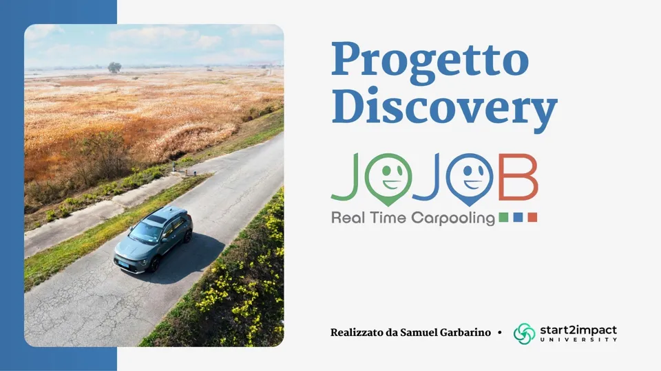
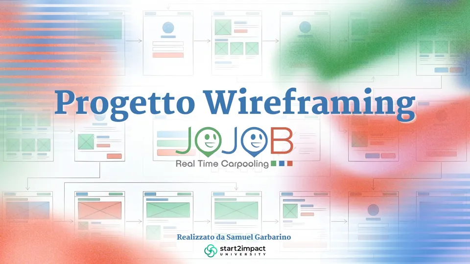
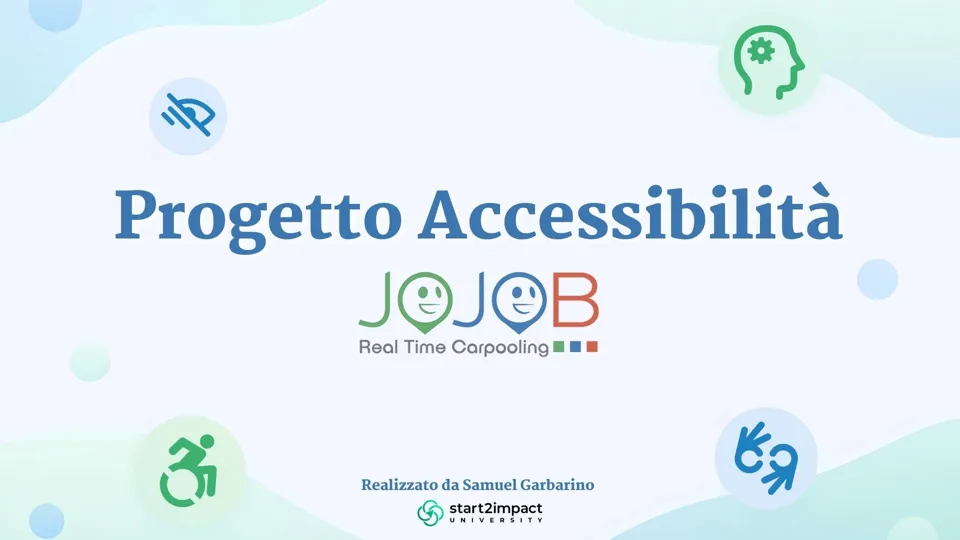

Portfolio
Progetti
Quattro progetti del Master in UX/UI Design di Start2impact, ognuno rivisto da designer che lavorano in aziende come Unipol, Deel, Capgemini e Leroy Merlin. Ogni case study mostra il percorso intero: contesto, problema, processo, soluzione e quello che rifarei diversamente.
-

2025 · UX research · 4 competitor
JojobRT: discovery
- Problema
- Capire perché il sito di JojobRT non convinceva pendolari e aziende.
- Cosa ho fatto
- Valutazione euristica, benchmark di 4 competitor, sondaggio utenti, personas, journey e nuova architettura informativa.
-

2026 · Wireframing · 5 pagine · 3 personas
JojobRT: wireframe e wireflow
- Problema
- Dal sito non era chiaro a chi si rivolge JojobRT, e i pendolari non trovavano motivi per fidarsi.
- Cosa ho fatto
- Wireframe desktop e mobile di cinque pagine, wireflow per tre personas, nuova sitemap.
-

2026 · Accessibilità · WCAG · 5 pagine
JojobRT: audit di accessibilità
- Problema
- Barriere per chi ha esigenze visive, cognitive e motorie.
- Cosa ho fatto
- Personas dedicate, analisi WCAG su cinque pagine reali, interventi in ordine di priorità.
-

2025 · Brand identity · 5 colori
Veganow: linee guida del brand
- Problema
- Un e-commerce plant-based nuovo, senza nome né identità.
- Cosa ho fatto
- Naming, logo disegnato a mano, palette a cinque colori, tipografia e linee guida per i social.
Altri lavori
Redesign di LastMinuteSottoCasa e copywriting per Il Vestito Verde sono su Behance.